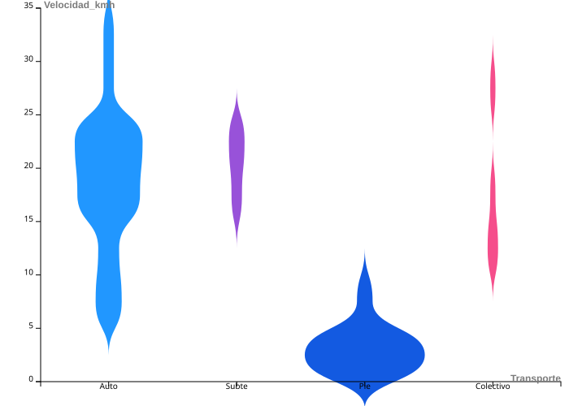
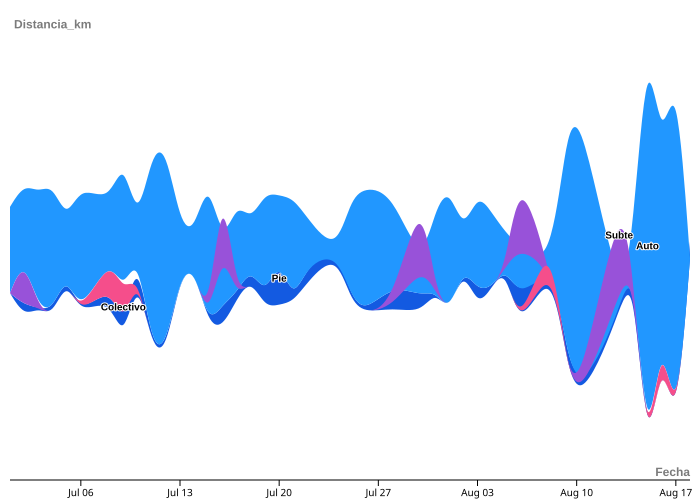

Tiempo total en cada transporte

📌 Objetivo
Realizar una exploración visual de datos personales utilizando todas las herramientas vistas en clase: RAWGraphs, Flourish, DataWrapper y Tableau. El proyecto debe transmitir una historia o análisis basado en datos propios, con visualizaciones estáticas y/o interactivas integradas en una página web.
📅 Fechas importantes
Entrega de prototipo: 19 de agosto
Entrega final + presentación oral: 2 de septiembre (Presentación breve de 5 minutos por estudiante)
🧠 Temática
Elegí un conjunto de datos personales que puedas registrar, recolectar o exportar. Algunas ideas posibles:
Registro diario de actividades (salidas, ejercicio, hábitos)
Biblioteca personal (libros leídos, películas vistas, música escuchada)
Datos de apps personales (Strava, Spotify, Netflix, Google Takeout, etc.)
Registros autogenerados (cuánto tiempo dedicás a tareas, comidas, etc.)
Comparando los distintos medios de transporte se identifica que el auto es el que mayor velocidad alcanza.

Viendo las distancias, el auto y el subte dominan los días de semana, mientras que los recorridos a pie aumentan los fines de semana o para trayectos cortos.


Esta visualización nos da una foto clara de mis hábitos y ayuda a tomar mejores decisiones.
Mirando los datos, puedo ver: